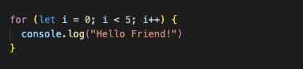
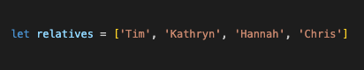
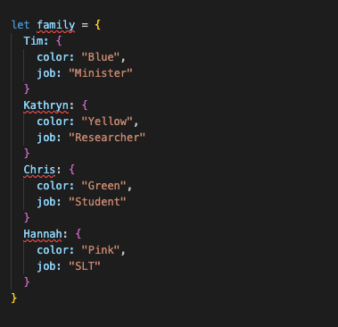
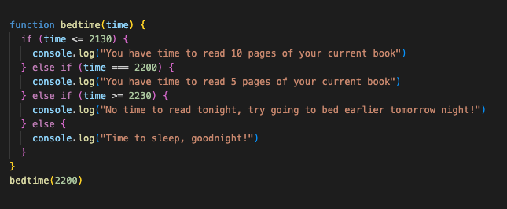

It's our time time explore JavaScript and the DOM and how it relates to HTML and CSS.
16 March 2025
HMTL defines the structure of the webpage. CSS assists with making the webpage look nice and appealing to look at. JavaScript provides interactivity that brings the webpage to life. With JavaScript you can provide interactivity for the user, such as; reaction to mouse clicks, animations for a loading page or even a fancy menu hamburger that pops open your Navigation links.
Control Flow to put it simply, is how the computer executes statements in a script. More often than not, a computer will execute code from the top to the bottom. When there are loops in the code, the computer will work through each one, starting at the first one before moving on to the second and so on and although this may sound like it may take some time to complete, the computer will execute your code quicker than you can say, "Bob's you're uncle!"
Imagine you're meeting with 5 friends, who you haven't seen for a while
and you need to greet them when you see them again. The way you could
greet all 5 of your friends is through a JavaScript loop, which could
look like this:

The loop in the image above will run 5 times over and each time it runs,
it will print "Hello Friend!" to the website console.
DOM stands for Document Object Model and it's an interface for websites. The DOM allows for progamming languages such as JavaScript to manipulate the elements of a webpage. The DOM also allows developers to test out how new colors or styles will look on their website before adding the changes into their html/css files.
An array allows multiple items to be stored under a single variable
name. When using an array, the items are counted by starting at 0. For
example, if you have 4 items in an array and you count like a
programmer, you would count 0 (Tim), 1 (Kathryn), 2
(Hannah), 3 (Chris). You can access items stored in
arrays via loops & functions.

An object allows multiple items and data connected to those items to be
stored in boxes. This allows you to access the data using the object
label, for example family.hannah.color would access the
data "Pink".

A function is a block of code written to perform a specific task. For
example, I want to know if I have time to read my book before bed and I
have written a function that takes my bed time and tells me if I have
enough time to read 10 or 5 pages, or if I need to go to bed earlier the
next night.

The above image shows a JavaScript function that takes the time entered
in the "bedtime(2200)" call and it will log into the console "You have
time to read 5 pages of your current book".